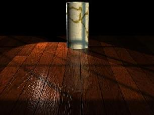
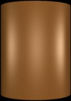
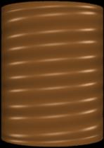

More...

More...
|
BMRT |

|
| © 1996 Michael J. Hammel |
 |
Shading is the process of calculating the color of a pixel from user-specified surface properties and the shading model. Texturing is a method of varying the surface properties from point to point in order to give the appearance of surface detail that is not actually present in the geometry of the surface. [1]A shader is a procedure called by the renderer to apply colors and textures to an object. This can include the surface of objects like block or spheres, the internal space of a solid object, or even the space between objects (the atmosphere). Although based on Peachy's description would imply that shaders only affect the coloring of surfaces (or atmosphere, etc), shaders handle both shading and texturing in the RenderMan environment.
slc myshader.sl
AttributeBegin
Color [0.9 0.6 0.6]
Surface "myshader"
ReadArchive "object.rib"
AttributeEnd
This example uses a surface shader (we'll talk about shader types in a
moment). The name in double quotes is the name of the shader procedure
which is not necessarily the name of the shader source file.
Since shaders are procedures they
have procedure names. In the above example the procedure name is
myshader. This happens to the be same as the base portion (without
the suffix) of the shader source filename. The shader compiler doesn't
concern itself with the name of the source file, however, other than to
know which file to compile. The output filename used for the .so file is
the name of the procedure. So if you name your procedure differently than
the source file you'll get a differently named compiled .so file. Although
this isn't necessarily bad, it does make it a little hard to keep track of
your shaders. In any case, the name of the procedure is the name used in
the RIB (or C binding) when calling the shader. In the above example,
"myshader" is the name of the procedure, not the name of the source file.
The RenderMan Interface specifies six types of shaders, distinguished by the inputs they use and the kinds of output they produce.The text then goes on to describe the following shader types:
Light Source Shaders
Light sources in the RenderMan Shading Language are provided a position and
direction and return the color of the light originating from that light and
striking the current surface point. The RenderMan specification provides
for a set of default light shaders that are very useful and probably cover
the most common lighting configurations an average user might encounter.
These default shaders include ambient light (the same amount of light
thrown in all directions), distant lights (such as the Sun), point lights,
spot lights, and area lights. All light sources have an intensity that
defines how bright the light shines. Lights can be made to cast shadows or not
cast shadows. The more lights that cast shadows you have in a scene the
longer it is likely to take to render the final image. During scene design
and testing its often advantagous to keep shadows turned off for most lights.
When the scene is ready for its final rendering turn the shadows back on.
Ambient light can be used to brighten up a generally dark image but the
effect is "fake" and can cause an image to be washed out, losing its
realism. Ambient light should be kept small for any scene, say with an
intensity of no more than 0.03. Distant lights provide a light that shines
in one direction with all rays being parallel. The Sun is the most common
example of a distant light source. Stars are also considered distant
lights. If a scene is to be lit by sunlight it is often considered a good
idea to have distant lights be the only lights to cast shadows. Distant
lights do not have position, only direction.
Spot lights are the familiar lights which sit at a particular location in
space and shine in one generalized direction covering an area specified by
a cone whose tip is the spot light. A spot lights intensity falls off
exponentially with the angle from the centerline of the cone. The angle is
specified in radians, not degress as with POV-Ray. Specifying the
angle in degrees can have the effect of severly over lighting the area
covered by the spot light. Point lights also fall off in intensity, but do
so with distance from the lights location. A point light shines in all
directions at once so does not contain direction but does have position.
Area lights are series of point lights that take on the shape of an object
to which they are attached. In this way a the harshness of the shadows
cast by a point light can be lessened by creating a larger surface of
emitted light. I was not able to learn much about area lights so can't
really go into detail on how to use them here.
Most light source shaders use one of
two illumination functions: illuminate() and solar(). Both provides ways
of integrating light sources on a surface over a finite cone. illuminate()
allows for the specification of position for the light source, while
solar() is used for light sources that are considered very distant, like
the Sun or stars. I consider the writing of light source shaders to be a
bit of an advanced topic since the use of the default light source shaders
should be sufficient for the novice user to which this article is aimed.
Readers should consult The RenderMan Companion and The RenderMan
Specification for details on the use of the default shaders.
Surface Shaders
Surface shaders are one of the two types of shaders novice users will make
use of most often (the other is displacement shaders). Surface shaders are
used to determine the color of light reflected by a given surface point
in a particular direction. Surface shaders are used to create wood
grains or the colors of an eyeball. They also define the opacity of a
surface, ie the amount of light that can pass through a point (the points
transparency). A point that is totally opaque allows no light to pass
through it, while a point that is completely transparent reflects no light.
The majority of the examples which follow will cover surface shaders. One
will be a displacement shader.
Volume Shaders
A volume shader affects light traveling to towards the camera as it passes
though and around objects in a scene. Interior volume shaders determine
the effect on the light as it passes through an object. Exterior volume
shaders affect the light in the "empty space" around an object.
Atmospheric shaders handle the space between objects. Exterior
and interior volume
shaders differ from atmospheric shaders in that the latter operate on all
rays originating from the camera (remember that ray tracing traces the
lights ray in reverse from nature - from camera to light source).
Exterior and interior shaders work only on secondary rays, those rays
spawned by the trace() function in shaders.
Atmospheric shaders are used
for things like fog and mist. Volume shaders are a slightly more advanced
topic which I'll try to cover in a future article.
Displacement Shaders
The texture of an object can vary in many ways, from very smooth to very
bumpy, from smooth bumps to jagged edges. With ordinary surface shaders a
texture can be simulated with the use of a bump map. Bump maps
perturb the normal of a point on the surface of an object so that the point
appears to be raised, lowered, or otherwised moved from its real location.
A bump map describes the variations in a surfaces orientation.
Unfortunately, this is only a trick and the surface point is not really
moved. For some surfaces this trick works well when viewed from the proper
angle. But when seen edge on the surface variations disapper - the edge is
smooth. A common example is an orange. With a bump map applied the orange
appears to be pitted over its surface. The edge of the sphere, however, is
smooth and the pitting effect is lost. This is where displacement shaders
come in.
In The RenderMan Interface Specification[3]
it says
The displacement shader environment is very similar to a surface shader, except that it only has access to the geometric surface parameters. [A displacement shader] computes a new P [point] and/or a new N [normal for that point].A displacement shader operates across a surface, modifying the physical location of each point. These modifications are generally minor and of a type that would be much more difficult (and computationally expensive) to specify individually. It might be difficult to appreciate this feature until you've seen what it can do. Plate 9 in [4] shows an ordinary cylinder modified with the threads() displacement shader to create the threads on the base of a lightbulb. Figures 1-3 shows a similar (but less sophisticated) example. Without the use of the displacement shader, each thread would have to be made with one ore more individual objects. Even if the computational expense for the added objects were small, the effort required to model these objects correctly would still be significant. Displacement shaders offer procedural control over the shape of an object.
|  |  |

|
| An ordinary cylinder |
Note that in this case the renderer attributes have not been turned on. The edges of the cylinder are flat, despite the apparent non-flat surface. |
Same cylinder with true displacements
In this image the renderer attributes have been turned on. The edges of the cylinder reflect the new shape of the cylinder. |
| Figure 1 | Figure 2 | Figure 3 |
Attribute "render" "truedisplacement" 1
Attribute "displacementbound" "coordinatesystem"
"object" "sphere" 2
The first of these turns on the true displacement attribute so that
displacement shaders actually modify the position of a point on the
surface. The second specifies how much the bounding box around the
object should grow in order to enclose the modified points.
How this works is that the attribute tells the renderer how much the
bounding box is likely to grow in object space. The renderer can't
no before hand how much a shader might modify a surface, so this statement
provides a maximum to help the renderer with bounding boxes around
displacement mapped objects. Remember that bounding boxes are used help
speed up ray-object hit tests by the renderer. Note that you can compute
the possible change caused by the displacement in some other space, such as
world or camera. Use whatever is convenient. The "sphere" tag lets the
renderer know that the bounding box will grow in all directions evenly.
Currently BMRT only supports growth in this manner, so no other values
should be used here.
Transformation and Imager Shaders
BMRT doesn't support Transformation Shaders (neither does Pixar's PRMan
apparently). Apparently transformation shaders are supposed to operate on
geometric coordinates to apply "non-linear geometric transformations".
According to [5]
The purpose of a transformation shader is to modify a coordinate system.It is used to deform the geometry of a scene without respect to any particular surface. This differs from a displacement shader because the displacement shader operates on a point-by-point basis for a given surface. Transformation shaders modify the current transform, which means they can affect all the objects in a scene.
surface matte (
float Ka = 1;
float Kd = 1;
)
{
point Nf;
/*
* Calculate the normal which is facing the
* direction that points towards the camera.
*/
Nf = faceforward (normalize(N),I);
Oi = Os;
Ci = Os * Cs * (Ka * ambient() + Kd * diffuse(Nf));
}
This is the matte surface shader provided in the BMRT distribution. The
matte surface shader happens to be one of a number of required shaders that
The RenderMan Interface Specification says a RenderMan compliant
renderer must provide.
Shader procedure names
The first thing to notice is the procedure type and name. In this case the
shader is a surface shader and its name is "matte". When this code is
compiled by slc it will produce a shader called "matte" in a file called
"matte.so". Procedure names can be any name that is not a reserved RIB
statement. Procedure names may contain letters, numbers and underscores.
They may not contain spaces.
Variables and scope
There are a number of different kinds of variables that are used with
shaders: Instance variables, global variables, and local variables.
Instance variables are the variables used as parameters to the shader.
When calling a shader these variables are declared (if they have not
already been declared) and assigned a value to be used for that instance of
the shader. For example, the matte shader provides two parameters that can
have appropriate values specified when the shader is instanced within the
RIB file. Lets say we have a sphere for which we will shade using the
matte shader. We would specify the instance variables like so:
AttributeBegin
Declare "Kd" "float"
Declare "Ka" "float"
Surface "matte" "Kd" 0.5 "Ka" 0.5
Sphere 1 -.5 .5 360
AttributeEnd
The values specified for Kd and Ks are the instance variables and the
renderer will use these values for this instance of the shader. Instance
variables are generally known only to the shader upon the initial call for
the current instance.
Data types and expressions
Shaders have access to only 4 data types: one scalar type, two vector
types, and a string type. A string can be defined and used by a shader, but
it cannot be modified. So an instance variable that passes in a string
value cannot be modified by the shader, nor can a local string variable be
modified once it has been defined.
The scaler type used by shaders is called a float type. Shaders must use
float variables even for integer calculations. The point type is a
a 3 element array of float values which describe a point in some space.
By default the point is in world space in BMRT (PRMan uses camera
space by default), but it is possible to
convert the point to object, world, texture or some other space within the
shader. On point can be transformed to a different space using the
transform statement. For example:
float y = ycomp(transform("object",P));
will convert the current point to object space and return the Y component
of the new point into the float variable y. The other vector type is also
a 3 element array of float values that specify a color. A color
type variable can be defined as follows:
color Cp = color (0.5, 0.5, 0.5);
Functions
A shader need not be a completely self contained entity. It can call
external routines, known as functions. The RenderMan Interface
Specificatoin predefines a large number of functions that
are available to shader authors using BMRT. The following list is just
a sample of these predefined functions:
#include "rmannotes.sl"
surface matte (
float Ka = 1;
float Kd = 1;
)
{
point Nf;
float fuzz = 0.05
color Ol;
/*
* Calculate the normal which is facing the
* direction that points towards the camera.
*/
Nf = faceforward (normalize(N),I);
Ol = pulse(0.35, 0.65, fuzz, s);
Oi = Os*Ol;
Ci = Os * Cs * (Ka * ambient() + Kd * diffuse(Nf));
}
The actual function is defined in the rmmannotes.sl file as
#define pulse(a,b,fuzz,x) (smoothstep((a)-(fuzz),(a),(x)) - \
smoothstep((b)-(fuzz),(b),(x)))
A shader could just as easily contain the #defined value directly without
including another file, but if the function is useful shader authors may
wish to keep them in a separate library similar to rmmannotes.sl. In this
example, the variable s is the left-to-right component of the current
texture coordinate. "s" is a component of the texture space, which
we'll cover in the section on coordinate systems. "s" is a global variable
which is why it is not defined within the sample code.
Note: This particular example might not be very useful. It is just meant to show how to include functions from a function library.
Functions are only callable by the shader, not directly by the renderer. This means a function cannot be used directly in a RIB file or referenced using the C binding to the RenderMan Interface. Functions cannot be recursive - they cannot call themselves. Also, all variables passed to functions are passed by reference, not by value. It is important to remember this last item so that your function doesn't inadvertantly make changes to variables you were not expecting.
Statements
The shading language provides the following statements for flow control:
Coordinate Systems
There are number of coordinate systems used by RenderMan. Some of these I
find easy to understand by themselves, others are more difficult -
especially when used within shaders. In a shader, the surface of an object
is mapped to a 2 dimensional rectangular grid. This grid runs from
coordinates (0,0) in the upper left corner to (1,1) in the lower right
corner. The grid is overlayed on the surface, so on a rectangular patch
the mapping is obvious. On a sphere the upper corners of the grid map to
the same point on the top of the sphere. This grid is known as
parameter space and any point in this space is referred to by the
global variables u and v. For example, a point on the
surface which is in the exact center of the grid would have (u,v)
coordinates (.5, .5).
Similar to parameter space is texture space. Texture space is a
mapping of a texture map that also runs from 0 to 1, but the variables used
for texture space are s and t. By default, texture space is
equivalent to parameter space unless either vertex variables (variables
applied to vertices of primitive objects like patches or polygons) or the
TextureCoordinates statement have modified the texture space of the primitive
being shaded. Using the default then, a texture map image would have its upper
left corner mapped to the upper left corner of the parameter space grid
overlying the objects surface, and the lower right corner of the image
would be mapped to the lower right corner of the grid. The image would
therefore cover the entire object. Since the texture space does not have
to be equivalent to parameter space it would be possible to map an image to
only a portion of an object. Unfortunately, I didn't get far enough this
month to provide an example of how to do this. Maybe next month.
There are other spaces as well: world space, object space, and shader space.
How each of these affects the shading and texturing characteristics is not
completely clear to me yet. Shader space is the default space in which
shaders operate, but points in shader space can be transformed to world or
object space before being operated on. I don't know exactly what this
means or why you'd want to do it just yet
One of the most fundamental problem solving techniques is "divide and conquer." That is, break down a complex problem into simpler parts; solve the simpler parts; then combine those parts to solve the original complex problem.The basic structure of a shader is similar to a procedure in C - the shader is declared to be a particular type (surface, displacement, and so forth) and a set of typed parameters are given. Unlike C, however, shader parameters are required to have default values provided. In this way a shader may be instanced without the use of any instance variables. If any of the parameters are specified with instance variables then the value in the instance variable overrides the parameters default value. An minimalist shader might look like the following:In shaders, [we] break down complicated surface patterns and textures into layers. Each layer should be fairly easy to write (if not, then we can break the layer into sub-layers). Then, [we] combine the layers by compositing.
surface null ()
{
}
In fact, this is exactly the definition of the null shader. Don't ask me
why such a shader exists. I'm sure the authors of the specification had a
reason. I just don't know what it is. Adding a few parameters, we start
to see the matte shader forming:
surface matte (
float Ka = 1;
float Kd = 1;
)
{
}
The parameters Ka and Kd have their default values provided. Note that Ka
is commonly used in the shaders in Guido Quaroni's archive of shaders to
represent a scaling factor for ambient light. Similarly, Kd is used to
scale diffuse light. These are not global variables, but they are well
known variables, much like "i", "j", and "k" are often used as counters in
C source code (a throwback to the heady days of Fortran programming).
#include "rmannotes.sl"
surface matte (
float Ka = 1;
float Kd = 1;
)
{
point Nf;
float fuzz = 0.05
color Ol;
/*
* Calculate the normal which is facing the
* direction that points towards the camera.
*/
Nf = faceforward (normalize(N),I);
Ol = pulse(0.35, 0.65, fuzz, s);
Oi = Os*Ol;
Ci = Os * Cs * (Ka * ambient() + Kd * diffuse(Nf));
}
Nothing special here. It looks very much like your average C procedure.
Now we get into methodologies. May [8] shows us how a
layered shader's psuedo-code might look:
surface banana(...)
{
/* background (layer 0) */
surface_color = yellow-green variations;
/* layer 1 */
layer = fibers;
surface_color = composite layer on surface_color;
/* layer 2 */
layer = bruises;
surface_color = composite layer on surface_color;
/* layer 3 */
layer = bites;
surface_color = composite layer on surface_color;
/* illumination */
surface_color = illumination based on surface_color
and illum params;
/* output */
Ci = surface_color;
}
What is happening here is that the lowest level applies yellow-and green
colors to the surface, after which a second layer has fiber colors
composited (blended or overlayed) in. This continues for each of 4 defined
layers (0 through 3) plus an illumination calculation to determine the
relative brightness of the current point. Finally, the newly computed
surface color is ouput via a global variable.
Using this sort of methodology makes writing a shader much easier as well
as allowing other shader authors to debug and/or extend the shader in the
future. A shader file is therefore sort of bottom-up design, where the
bottom layers of the surface are calculated first and the topmost layers
are computed last.
A colored cross pattern
This example is taken verbatim from RManNotes by Stephen F. May.
The shader creates a two color cross pattern. In this example the pattern
is applied to a simple plane (a bilinear patch). Take a look at the
source code.
color surface_color, layer_color;
color surface_opac, layer_opac;
|
The first thing you notice is that this shader defines two local
color variables: surface_color and layer_color.
The layer_color variable is used to compute the current layers color.
The surface_color variable is used to composite the various layers
of the shader. Two other variables, surface_opacity and
layer_opacity, work similarly for the opacity of the current layer.
The first layer is a verticle stripe. The shader defines the color for this layer and then determines the opacity for the current point by using a function called pulse(). This is a function provided by May in his "rmannotes.sl" function library. The pulse() function allows the edges of the stripes in this shader to flow smoothly from one color to another (take a look at the edges of the stripes in the sample image). pulse() uses the fuzz variable to determine how fuzzy the edges will be. Finaly, for each layer the layers color and opacity are blended together to get the new surface color. The blend() function is also part of rmannotes.sl and is an extension of the RenderMan Interface's mix() function, which mixes color and opacity values. |
|
Oi = surface_opac;
Ci = surface_opac * surface_color;
These two values are used by the renderer to compute
pixel values in the output image.
Adding opacity - a wireframe shader
This example is taken from the RenderMan Companion. It shows how a shader
can be used to cut out portions of a solid surface. We use the first
example as a backdrop for a sphere that is shaded with the screen() shader
from the RenderMan Companion text (the name of the shader as used here is
slightly different because it is taken from the collection of shaders from
Guido Quaroni, who changed the names of some shaders to reflect their
origins). First lets look at the sceen using the "plastic" shader
(which comes as a default shader in the BRMT distribution). Figure 5 shows
how this scene renders. The sphere is solid in this example. The
RIB code for this contains the following lines:
AttributeBegin
Color [ 1.0 0.5 0.5 ]
Surface "plastic"
Sphere 1 -1 1 360
AttributeEnd
In Figure 6 the sphere has been changed to a wireframe surface. The
only difference between this scene and Figure 5 is the surface shader used.
For Figure 6 the rib code looks like this:
AttributeBegin
Color [ 1.0 0.5 0.5 ]
Surface "RCScreen"
Sphere 1 -1 1 360
AttributeEnd
The rest of the RIBs are exactly the same. Now lets look at the
screen() shader code.
surface
RCScreen(
float Ks = .5,
Kd = .5,
Ka = .1,
roughness = .1,
density = .25,
frequency = 20;
color specularcolor = color (1,1,1) )
{
varying point Nf =
faceforward( normalize(N), I );
point V = normalize(-I);
|
|
if( mod(s*frequency,1) < density ||
mod(t*frequency,1) < density )
Oi = 1.0;
else
Oi = 0.0;
Ci = Oi * ( Cs * ( Ka*ambient() + Kd*diffuse(Nf) ) +
specularcolor*Ks* specular(Nf,V,roughness));
}
A simple paper shader
While working on my entry for the March/April 1997 round of the IRTC I
wrote my first shader - a shader to simulate 3 holed notebook paper. This
simplistic shader offers some of the characteristics of the previous
examples in producing regularly spaced horizontal and verticle lines plus
the added feature of fully transparent circular regions that are positioned
by instance variables.
We start by defining the parameters needed by the shader. There are quite
a few more parameters than the other shaders. The reason for this is that
this shader works on features which are not quite so symmetrical. You can
also probably chalk it up to my inexperience.
color hcolor = color "rgb" (0, 0, 1); color vcolor = color "rgb" (1, 0, 0); float hfreq = 34; float vfreq = 6; float skip = 4; float paper_height = 11; float paper_width = 8.5; float density = .03125; float holeoffset = .09325; float holeradius = .01975; float hole1 = 2.6; float hole2 = 18; float hole3 = 31.25;The colors of the horizontal and vertical lines come first. There are, by default, 34 lines on the paper with the first 4 "skipped" to give the small header space at the top of the paper. The vertical frequency is used to divide the paper in n equal vertical blocks across the page. This is used to determine the location of the single verticle stripe. We'll look at this again in a moment.
surface_color = Cs;This line simply initializes a local variable to the current color of the surface. We'll use this value in computing a new surface color based on whether the point is on a horizontal or vertical line.
/*
* Layer 1 - horizontal stripes.
* There is one stripe for every
* horizontal block. The stripe is
* "density" thick and starts at the top of
* each block, except for the first "skip"
* blocks.
*/
tt = t*paper_height;
for ( horiz=skip; horiz<hfreq; horiz=horiz+1 )
{
min = horiz*hblock;
max = min+density;
val = smoothstep(min, max, tt);
if ( val != 0 && val != 1 )
surface_color = mix(hcolor, Cs, val);
}
This loop runs through all the horizontal blocks on the paper
(defined by the hfreq parameter) and determines if the point
lies between the top of the block and the top of the block plus
the width of a horizontal line (specified with the density parameter).
|
|
min = horiz*hblock;
max = min+density;
val = smoothstep(min, max, tt);
if ( val != 0 && val != 1 )
surface_color = val*hcolor;
Alternatively, the line color could be used on its own, without combining
it with the value returned from the smooth step. This gives a very jagged
line, but the line is much darker even when used with smaller line
densities. The result from using the line color alone (with a smaller line
density) can be seen in Figure 9.
/* Layer 2 - vertical stripe */
ss = s*paper_width;
min = vblock;
max = min+density;
val = smoothstep(min, max, ss);
if ( val != 0 && val != 1 )
surface_color = mix(vcolor, Cs, val);
This next bit of code does exactly the same as the previous code
except it operates on the vertical line. Since there is only one
verticle line there is no need to check every vertical block, only
the one which will contain the visible stripe (which is specified
with the vblock parameter).
shole = holeoffset*paper_width; ss = s*paper_height; tt = t*paper_height; pos = (ss,tt,0);Note that we use the papers height for converting the ss,tt variables into the scale of the paper width and height. Why? Because if we used the width for ss we would end up with eliptical holes. There is probably a better way to deal with this problem (of making the holes circular) but this method worked for me.
/* First Hole */
thole = hole1*hblock;
hpos = (shole, thole, 0);
Oi = filterstep (holeradius*paper_width,
distance(pos,hpos));
/* Second Hole */
thole = hole2*hblock;
hpos = (shole, thole, 0);
Oi *= filterstep (holeradius*paper_width,
distance(pos,hpos));
/* Third Hole */
thole = hole3*hblock;
hpos = (shole, thole, 0);
Oi *= filterstep (holeradius*paper_width,
distance(pos,hpos));
Filterstep is, again, a standard function in the RenderMan specification.
However, this function was not documented by either the RenderMan Interface
Specification or the RenderMan Companion. According to Larry Gritz
The filterstep() function is identical to step, except that it is analytically antialiased. Similar to the texture() function, filterstep actually takes the derivative of its second argument, and "fades in" at a rate dependent on how fast that variable is changing. In technical terms, it returns the convolution of the step function with a filter whose width is about the size of a pixel. So, no jaggies.Thus, using filterstep() helped to antialias the edges of the holes (although its not that obvious from such a small image given in Figures 8 and 9). I didn't try it, but I bet filterstep() could probably be used to fix the problems with the horizontal and vertical lines.
A textured mapped chalkboard
This simple texture map example is used in my Post Detention image
which I entered in the March/April 1997 IRTC. The actual shader is taken
from the archive collection by Guido Quaroni, and the shader originally
comes from Larry Knott (who I presume works at Pixar). I didn't add an
image of this since all you would see would be the original image mapped on a
flat plane, which really doesn't show anything useful. If you want to take
a look at the chalkboard in a complete scene, take a look at the
companion article
in this months Graphics Muse column.
Like the other shader examples, this one is fairly straightforward. An
image filename is passed in the texturename parameter. Note that
image files must be TIFF files for use with BMRT. The texture coordinates
are used to grab a value from the image file which is then combined with
the ambient and diffuse lighting for the incident ray. If a specular
highlight has been specified (which it is by default in the Ks parameter)
then a specular highlight is added to the incident ray. Finally, the
output value, Ci, is combined with the surfaces opacity for the final color
to be used by the current surface point.
Displacement map example
We've already seen an example of displacement maps using the threads()
shader. Lets take a quick look at the shader code:
magnitude = (sin( PI*2*(t*frequency +
s + phase))+offset) * Km;
Here, the displacement of the surface point is determined by using a
phased sinusoidal. The t variable determines the position lengthwise
across the surface and s is used to cause the spiraling effect. The next
bit of code
if( t > (1-dampzone))
magnitude *= (1.0-t) / dampzone;
else if( t < dampzone )
magnitude *= t / dampzone;
causes the ends of the surface, in our case a cylinder, to revert to the
original shape. For our example that means this forces the shader to leave
the ends circular. This helps to keep the object that has been threaded in
a shape that is easily joined to other objects. In the RenderMan
Companion, the threaded cylinder is joined to a glass bulb to form a
light bulb. Finally, the last two lines
P += normalize(N) * magnitude; N = calculatenormal(P);cause the point to be moved and the normal for the new point to be calculated. In this way the point visually appears to have moved, which indeed it has.
Next month I planned on doing the 3rd part of this 3 part BMRT series. I think taking 2 months between articles worked well for me this time since it allowed me a little more time to dig deeper. Plan on the final article on BMRT in this series in the July issue of the Graphics Muse. Till then, happy rendering.
|
|
|
|
| © 1996 by Michael J. Hammel |